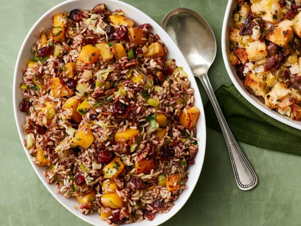

Rice Stuffing

Description
Rice stuffing with zestiness added, perfect for a Thanksgiving meal.
Ingredients
- 6 ounces of wild rice
- 2 tablespoons butter
- 1 large orange, zested and juiced
- 1/2 cup toasted, chopped pecans
Steps
- In a saucepan, saute rice in butter until brown, stirring frequently.
- Stir in seasoning and orange zest.
- Mix together orange juice and water to equal 2 1/3 cups water and add to rice.
- Bring to a boil, cover and simmer.
- Stir in toasted pecans.